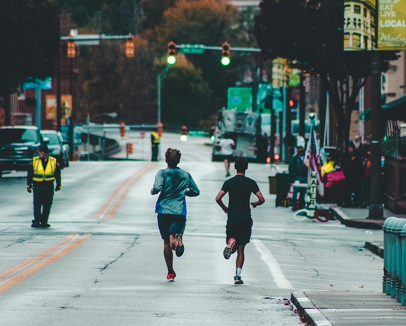

Le Vélo et la Marche
Le Vélo
En France, la part modale du vélo a chuté au cours des décennies passées, avec l'augmentation du taux de motorisation et un urbanisme peu favorable à sa pratique. Elle est aujourd'hui estimée à 3% pour l'ensemble de la France. Au cours des 5 à 10 dernières années, la part du vélo a continué à se dégrader dans les villes où aucune volonté politique ne se manifestait. Mais, là où une politique volontariste a été mise en place, on a pu constater une multiplication par deux ou trois des déplacements ayant recours à la bicyclette. Les grandes villes concernées sont notamment 4 :
- Strasbourg : 15 % des déplacements à vélo (8 % sur l'ensemble de l'agglomération) ;
- Bordeaux : 8 % (3 à 4 % pour le grand Bordeaux) ;
- Grenoble : 5 à 6 % ;
- Nantes : 5 à 6 % ;
- Paris : 2 à 3 % (en 1991 0,4 %) ;
- Lyon : 2 à 3 % ;
- Lille : 2 à 3 % ;
- Montpellier : 2 à 3 %.
La Marche
La marche est une activité physique considérée comme excellente pour la santé, et elle ne réclame qu'une paire de chaussures ordinaire (dont on peut même se passer), avantages dont les autres modes de transport sont dépourvus. Comme moyen de locomotion, elle est un système suffisamment performant pour avoir été longtemps le principal support de la projection des forces militaires, assurant la cohésion de grands empires, dominée seulement par l'usage des chevaux et des navires beaucoup plus coûteux. Ce n'est qu'avec l'apparition de la force mécanique que la marche est largement supplantée pour les grands mouvements stratégiques ou tactiques, tout en restant toutefois essentielle pour les mouvements de moindre ampleur.
La marche est le nom générique d'activités très différentes, de la promenade digestive en terrain plat au déplacement militaire rapide avec une charge significative en terrain et conditions météorologiques difficiles avec forte pente. La consommation d'énergie dépend considérablement des conditions, notamment le poids du marcheur (et de son éventuellement chargement), sa vitesse, et la nature du terrain. Le calcul est typiquement estimé en multipliant une estimation du métabolisme de base par un facteur d'intensité : un nombre d'équivalents métabolique (ou METs, pour l'anglais Metabolic Equivalent of Task). L'équivalent métabolique de la marche peut varier de 2 (marche très lente en flânant, sachant que c'est aussi la valeur de simplement rester debout) à plus de 10 (déplacement d'une lourde charge dans des escaliers). Toutes les activités physiques sont à peu près dans cette gamme, représentative des capacités du corps humain, hormis les plus intenses qui peuvent brièvement dépasser 15.
Petit défi : objectif de course.
Objectif de training du corps
Pour toute les personne voulant faire l'objectif de course vous devez :
Pendant une semaine tout les jours :
- courir 5 km
- faire 250 mètres de dénivler
- faire 50 pompes (pas forcement d'affiler)
- faire du gainage pendant 1 minute 30
- D'aller-retour de fente sur 6 mètres
Regarder un tuto YouTube si vous connaissez pas les exercices